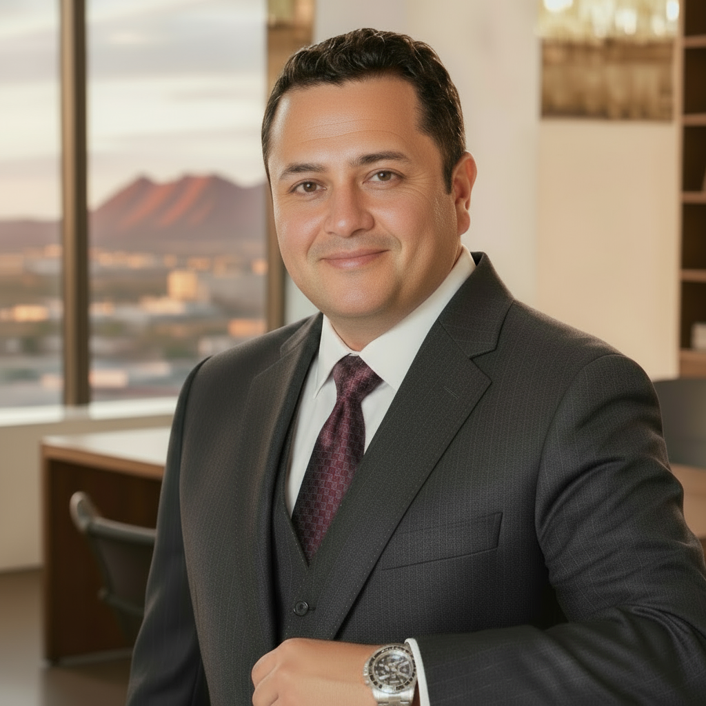

Opening a protein market takes more than a product.
Buyers are often committed to brands, cuts, sizes, specifications and suppliers. The work is earning the opportunity one conversation at a time.
For companies ready to expand, develop strategic accounts and turn market opportunities into sustainable revenue, I bring field-tested commercial execution across the United States, Mexico and multicultural markets.

My career has been built around developing business where relationships, product knowledge, market intelligence and execution matter. I work across B2B sales, market expansion, strategic accounts, distribution, food & protein and international trade.
My advantage is cultural and commercial: I understand Anglo, Hispanic, Asian and Halal-oriented markets, including the different product specifications, cuts, certifications, buying behaviors and relationship dynamics that influence purchasing decisions.
Identify opportunities, create entry strategies, build pipelines and establish durable customer relationships.
Consultative selling, negotiation, strategic accounts, distributors, wholesale, retail and foodservice.
Beef, pork, poultry, seafood, grains, edible oils and beverages across complex multicultural channels.
Coach sales teams, manage pricing and margins, solve field problems and drive disciplined performance.
A product can be excellent and still fail if the market does not understand it. I know how to adapt the commercial approach to the customer, culture, product specification and purchasing environment.
U.S. buyers, distributors, foodservice operators and retail channels.
Mexican and Latin American products, cuts, traditions and purchasing behavior.
Community-specific specifications, cuts, presentation and customer expectations.
Certification, sourcing, standards and cultural requirements that influence the sale.
2022–Present · U.S. business development, food & protein sales, market expansion and commercial strategy.
2021–2022 · Leadership, operational improvement and sales strategy.
2018–2019 · Approximately 129 industrial customers across the assigned territory from Guaymas to Los Mochis.
Experience with products and sourcing involving Mexico, the U.S., Canada, Ecuador, India and other international markets.
Buyers are often committed to brands, cuts, sizes, specifications and suppliers. The work is earning the opportunity one conversation at a time.
Latino, Anglo, Asian and Halal customers can have very different expectations. Knowing those differences changes the outcome.
AI and technology can accelerate research, productivity and decision-making while relationships remain the foundation of business.
Selected posts covering beef and pork, U.S. meat markets, multicultural buyers, Halal, supply chain and AI-driven business strategy.
Practical market perspective from direct commercial experience.
Multicultural MarketsHow culture and customer expectations shape the sale.
HalalMarket-specific requirements, relationships and opportunity.
U.S. MeatProduct, sourcing and commercial positioning.
ProteinConnecting product knowledge with customer demand.
AI & StrategyTechnology that improves research, productivity and decision-making.
Master’s in International Business | Bachelor’s in International Commerce — Universidad La Salle
Food Sanitation • Diesel Engine Basics (Cummins) • Business English • Google AI & Productivity • MIT Introduction to Generative AI • BIG School Spain — ChatGPT, Vibe Coding & AI-driven automated workflows
Open to senior opportunities in Business Development, Market Expansion, Food & Protein, International Trade and Commercial Leadership.